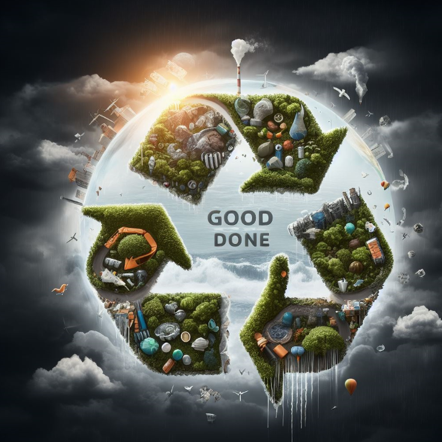

Le recyclage

Le recyclage, véritable pilier de la durabilité environnementale, incarne la puissance de la transformation positive que nous pouvons instaurer dans notre société. C'est bien plus qu'une simple pratique de gestion des déchets ; c'est un acte concret en faveur de la préservation des ressources naturelles, de la réduction de la pollution et de la construction d'un avenir plus durable.
Au cœur du recyclage réside la conversion des déchets en nouvelles opportunités. Les matériaux tels que le papier, le verre, le plastique et le métal sont collectés, triés et traités pour être réintégrés dans le cycle de production. Ce processus ingénieux permet de réduire la demande en matières premières, préservant ainsi les habitats naturels et limitant l'exploitation excessive des ressources naturelles.
L'impact environnemental positif du recyclage s'étend également à la réduction des émissions de gaz à effet de serre. La production de matériaux à partir de matières premières vierges est souvent énergivore et émettrice de CO2. En recyclant, nous limitons ces émissions, contribuant ainsi à atténuer le changement climatique et à préserver la qualité de l'air que nous respirons.
Le recyclage, au-delà de ses avantages environnementaux, stimule également l'économie circulaire. En transformant les déchets en ressources, il crée des emplois dans le secteur du recyclage, encourageant l'innovation et la croissance durable. Les industries axées sur le recyclage deviennent des acteurs clés dans la construction d'une économie plus verte et plus résiliente.
La participation individuelle au recyclage est une pierre angulaire de son succès. Le tri sélectif à la source, la sensibilisation aux bonnes pratiques de recyclage et la réduction de la production de déchets non recyclables sont autant d'actions concrètes que chaque citoyen peut entreprendre. Ces gestes modestes, mais collectifs, se traduisent par un impact considérable sur la réduction de la quantité de déchets prévue aux décharges.
Éduquer et sensibiliser sont des éléments clés pour renforcer la culture du recyclage. Les programmes éducatifs, les campagnes de sensibilisation et les initiatives communautaires jouent un rôle crucial pour inciter les individus et les entreprises à adopter des pratiques plus durables.
En conclusion, le recyclage représente une voie essentielle vers un avenir plus respectueux de l'environnement. En intégrant cette pratique dans notre quotidien, en éduquant les générations actuelles et futures, nous contribuons collectivement à la préservation de notre planète. Chaque bouteille recyclée, chaque journal trié, chaque geste compte, formant ainsi une chaîne solide vers une société plus équilibrée et durable.